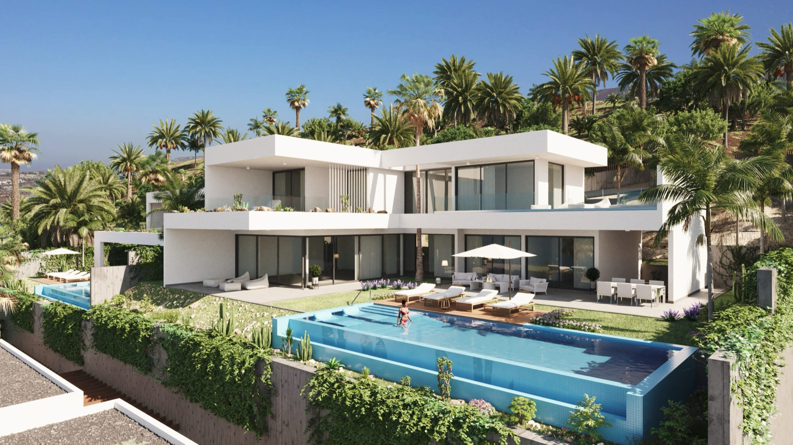
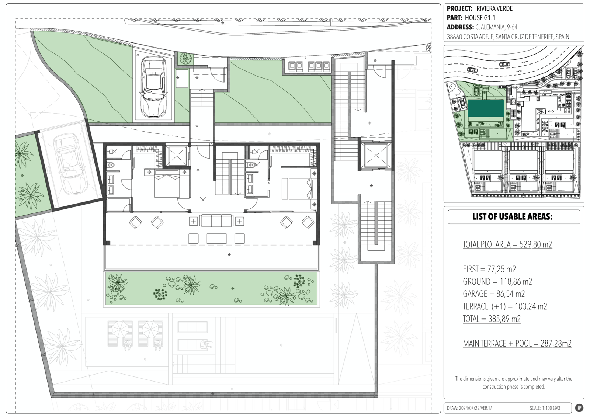
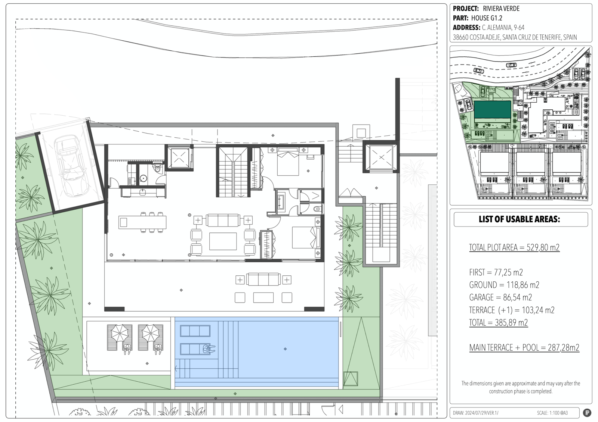
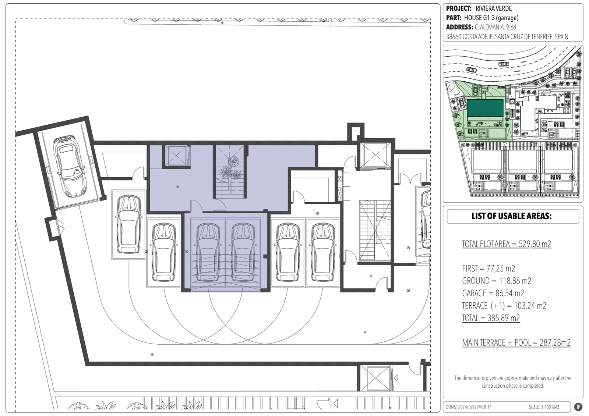

Renders provided by the developer. Photography to follow at handover.Renders proporcionados por el promotor. Las fotografías seguirán a la entrega.
A boutique development of five luxury villas in San Eugenio Alto, one of Costa Adeje's most elevated and tranquil corners. Each villa faces the ocean with long-range views to La Gomera. Drawn by Teótimo Rodríguez Hermoso and built with ecological materials and green technologies — sophisticated architecture with a light footprint. Un desarrollo boutique de cinco villas de lujo en San Eugenio Alto, uno de los rincones más elevados y tranquilos de Costa Adeje. Cada villa mira al océano con vistas largas hasta La Gomera. Firmada por Teótimo Rodríguez Hermoso y construida con materiales ecológicos y tecnologías verdes — arquitectura sofisticada con huella ligera.
Price on requestPrecio a consultar

Renders provided by the developer. Photography to follow at handover.Renders proporcionados por el promotor. Las fotografías seguirán a la entrega.
Five private villas, each designed to deliver privacy and sophistication. The project sits above San Eugenio Alto — elevated enough to catch the ocean on three sides, with the silhouette of La Gomera rising from the Atlantic at sunset. The same elevation keeps you above the tourist zone noise.
Sustainability is a core part of the brief. Riviera Verde incorporates green technologies — think thermal envelope, photovoltaic integration, rainwater management — and ecological materials chosen to minimise environmental impact across the project's lifetime. This is not a developer bolt-on; it's how the buildings were conceived from the first line.
Architect: Teótimo Rodríguez Hermoso. Developer: Riviera Verde. Promoted by Tenerife Resort Invest as the exclusive UK / Italian / German representation.
Cinco villas privadas, cada una diseñada para ofrecer privacidad y sofisticación. El proyecto se asienta sobre San Eugenio Alto — lo suficientemente elevado para captar el océano por tres lados, con la silueta de La Gomera recortándose sobre el Atlántico al atardecer. La misma cota mantiene la vivienda por encima del ruido de la zona turística.
La sostenibilidad forma parte del encargo. Riviera Verde incorpora tecnologías verdes — envolvente térmica, integración fotovoltaica, gestión de aguas pluviales — y materiales ecológicos seleccionados para minimizar el impacto ambiental a lo largo de la vida del proyecto. No es un añadido del promotor; así se concibieron los edificios desde la primera línea.
Arquitecto: Teótimo Rodríguez Hermoso. Promotor: Riviera Verde. Representación por parte de Tenerife Resort Invest.



The developer maintains a live site at rivieraverde.es. For the full dossier — unit-by-unit pricing, payment schedule, handover date, reservation status — contact Tenerife Resort Invest directly.
El promotor mantiene un sitio activo en rivieraverde.es. Para el dossier completo — precios por unidad, plan de pagos, fecha de entrega, estado de reservas — contacte directamente con Tenerife Resort Invest.
Private viewings of Riviera Verde by appointment with Stazio. TRI represents the development — full dossier and unit pricing on request. Visitas privadas a Riviera Verde con cita previa con Stazio. TRI representa el desarrollo — dossier completo y precios por unidad a consultar.